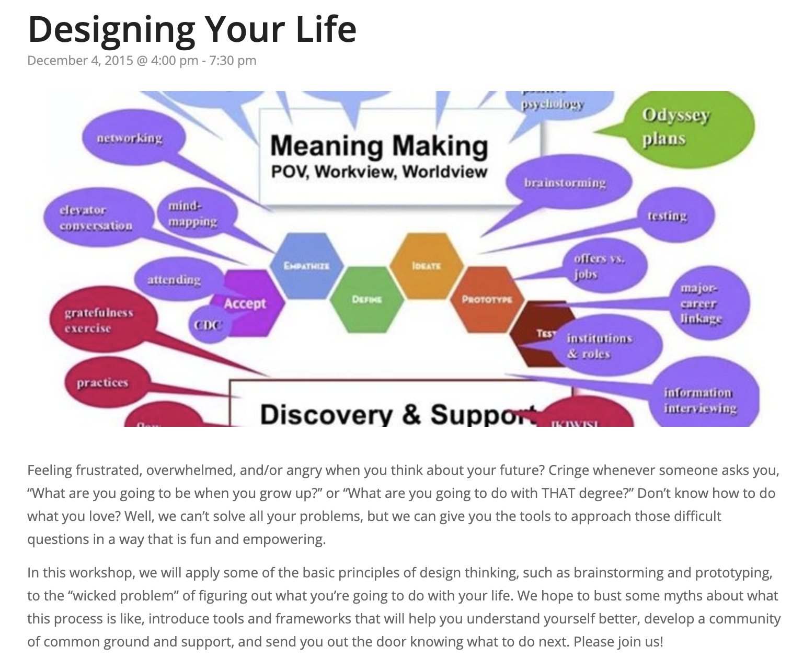

My name is Nicole Maslan. I create applications, instruments, games and much, much more that are fun, educational, and easy-to-use.
Some projects from the world of cognitive science I have done in the past include:
While working at Stanford with the Computation and Cognition lab, I developed the web application shown below to study how people name objects they have never seen before. This project ended up turning into my thesis found here. If you would like to read it, please contact me at nickimaslan@gmail.com
At the USC Institute for Creative Technologies, I worked with the Narrative Group trying to model how humans create stories using commonsense psychology. When dealing with a complex problem like this, developing a small yet rich enough scope to do research is critical. That is why, the Narrative Lab created the Heider Simmel Interactive Theater to study how people, like you and me, use commonsense psychology to describe (seemlingly) very simple events. The videos below are examples of this application and narrations are included.
One Hundred Challenge Problems for Logical Formalizations of Commonsense Psychology An Integrated Evaluation of Perception, Interpretation, and Narration
Designing your life isn't always easy. At the Claremont Colleges, I worked at The Hive to lead a workshop for students to sit down and stand up and move around and walk through the design process for creating there futures.
Designing Your Life Workshop 